BarbecueNight.com
The Every Thursday Night Barbecue At Dick Flaharty's
The most recent Thursday, followed by the previous barbecues, for this page...
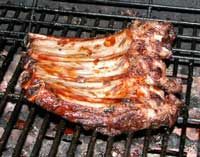
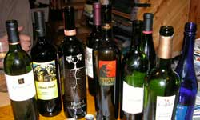
19 April 2007:
First we establish the priorities.
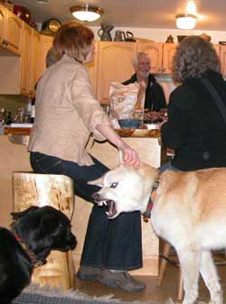
Then we establish dominance
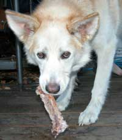 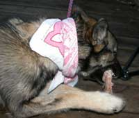 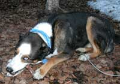
Then we eat.
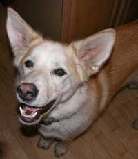 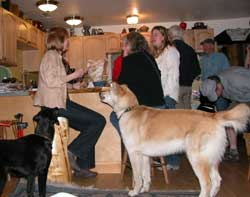
Then we socialize.
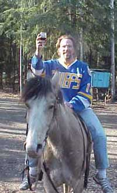
Then we ride home, still daylight in the new summer night in Fairbanks.
Same old stuff.
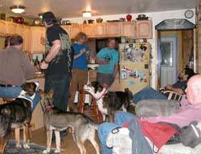
12 April: The question comes forward: Should the new prestigious headquarters of the prestigious Alaskan Alpine Club have a prestigious bunk bed for visiting climbers, and let any additional sorts sleep on the floor, or a less prestigious three tier bed, so that one of any additional sorts would be more elevated? Well, the floor is a good floor, and the air mattresses would be the same. Nobody would be using the bunk to sit on because the club has many comfortable chairs (from the dumpsters), and plenty of space in the climber dungeon, but there are those who insist that the bottom bunk is for sitting on, and only slept on as an aside, and a three tier bunk would preclude that traditional phenomenon. From there the discussion went through a few bottles of wine and erratic accusations of profound intellectual paucity expressed by more than one of the discussion committee.
The dogs questioned the club's food preparation facilities, and made several astute suggestions relating to access by the climbers sleeping on the floor. We would not otherwise have thought of it. Always wise to have a multi-species discussion. An auxiliary refrigerator handle will be duct-taped to the lower portion of the door, modified to not require an opposable thumb.
While those myopic lower 48ers are still bickering over each other's inconsequential nationalities, ethnicities, religions and political illusions, we more enlightened Alaskans have already integrated multi-species social accommodation policies through bio-regional communication, as usual. However, do not show up believing these Alaskans without inquiry in regard to certain local nuances. Wise to avoid discussions with spring grizzly bears just emerging from hibernation. Some of them can be as irrational at George Bush and his thugs. Some of the people who disappeared in Alaska were last seen attempting to chat-up spring grizzly bears.
I suppose I should look up the meaning of that word, myopic.
The prior weekend's snow machine trip to Tolovana Hot Springs was superlative. Quit your job and run away to Alaska, but wait for next winter because the snow is melting fast these days, and the mosquitoes are regrouping in Brigade size hunter-killer flocks.
5 April: We were enlightened by a newly arrived and delightful TSA (airport Gestapo) individual from the eastern portion of the lower 48, shipped in without being told much, to serve in remote villages, to search villagers before allowing them on small commuter planes with their guns, knives, traps, fire starting implements, dead animals, axes, wire, explosives and other such things normal to living in Alaska. Because TSA folks must survive short periods of time in the villages, among the villagers they insult with annoying Washington DC idiot-drills, they do not last long, nor want to. Before the evening was concluded the aforementioned individual recognized her primary task as that of actively seeking another job. Not to worry, the idiot feds are looking for replacement TSA, police and military victims as fast as more humans can be taught by the government's public schools to never question absurd government contradictions and maliciousness.
The snow machine trip to Tolovana Hot Springs was planned. No TSA at Tolovana International.
29 March: Wait. The web slave was not there. He was required to be at another function. No report until the rumors of what really happened are verified. We don't upload nothing that aint been certified by somebody else who heard the same rumor, of anything similar, which is a darn sight more accurate that what you hear from government, quite obviously.
22 March:
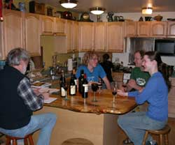
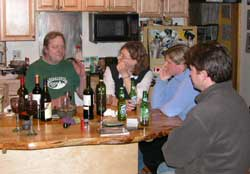
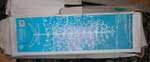
Hot mall (dumpster) find. The artificial Christmas tree, 6
foot tall, that is wire and lights only, still in the box. None
of this foo foo green artificial tree needles stuff. What?, that
is not exciting? You were obviously not looking for one.
A smattering of small eclectic groups drifted through this evening, including the Brit from Wales. No, that is not England. It is Wales.
By chance the discussion of a recent climbing adventure into the hills north of Nome compared the winter climbing there with that of the Scottish highlands. Scotland, not England, or Wales. If you would fly to Scotland to climb ice in the Scottish highland crags, you might fly to Nome for the same, otherwise you would have more good sense and climb in the Alaska Range in the winter.
Moulins were discussed, in depth, quite naturally. Yes the technical difficulties of filming them in good style involve an inordinate array of variables that can all be calculated, if you have time, or
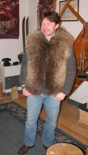
remarkable luck, and survive the hazards of learning by luck. Try not to be in them when a 7.9 earthquake arrives. Okay, okay, wed will show the moulin slide show again sometime. Be there, or go into the hills and do not waste your time with any stories that are not your own.Two of the bottles of wine were remarkable. Saint Something, and ah, it was an 02 of, ah, red wine. We did not share those with the mere common rabble who did not notice them before they were empty.
Now the Brit from Wales can prove to his boss that he was actually in Alaska, getting work done, unless his boss figures out that he was only partying the entire time.
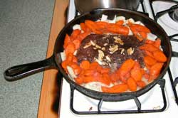
15 March 2007The web slave's gourmet-late-for-function thing. Package of frozen ground moose meat in onions, carrots, soy sauce, garlic and black pepper. Turn on heat and ignore.
Some genuinely fine wine walked in the door, because known wine notables were there.
There was some elevated voices discussing government, if you can imagine such a thing, and some serious planning for snow machining from Fairbanks to Hudson's Bay (leaving the next day).
And the What Is This item came out again. Will somebody tell us what this is....
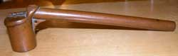
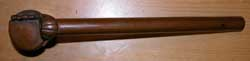
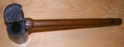
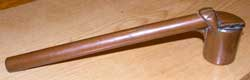
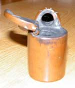
It is about 8 inches long, with a hollow handle that has a closed end. Steel wool in the fire chamber. The hinged cap has a vertical tang that also covers the fire end of the hole in the handle. Old. Copper. Has been used a lot.Email your related knowledge to Doug at Buchanan.ws (replace at with @) if you would be so kind. We will upload the answer so other people will know in case they have one of these things and do not know what it is.
(NO PHOTO) 8 March 2007
Okay Okay Okay.... the BBQ slave is back on the job as chief grillmeister and word chef. Whatdaya mean you expected him to have his camera with him. He did good to get there.
The Anchorage Adventure Girls were there, the full group, on a road trip to a Chena Hot Springs function. And Coressa from Alabama, of all places. No lack of energy, and data exchange crackled in the air.
Caribou steaks in a Dijon mustard and secret ingredient sauce on the barbecue with slab-o-moose, and a thick soup mix that would make soup the food of the realm if the recipe escaped. If the person who made the rice mix reads this, bring that dish as often as you wish.
The wine selection arrived in hand from personal wine making endeavors, Washington wineries, and recent wine tastings, excessive in number. The unlabeled bottles made by Erin in Anchorage faced serious judgment standards and commercial competition. This is no shmuck function of lower-48 socially proprietous sorts who place graciousness above raw reality in the far frozen north. It is often boldly stated that the wine in the glass is plain not as good as the wine that was in the empty bottle on the counter. No few glasses of wine have been hastily poured into the dog dish upon sight of a better bottle coming through the door. Any particularly undeserving bottles are subject to target practice, although the high standards applied to wine selection among the participants has precluded any such event so far. And white wine jolly well better be the best in the realm just to not be severely denigrated. So the white wine that Erin made promptly started coldly calculated discussions as to whether this was a result of statistically improbable luck or the tangible effects of her noticeable positive vibrational energy and unique understanding of food products, because she sure as heck was not schooled in the ancient art of wine making while being raised in Alaska. And the red wine she made was even better. Upstaged all but the Seth Ryan cab from the Washington wine tour. Now if we can get her fired from her Anchorage job, and back in Fairbanks more often.
The Antarctic report and the Barrow report were mixed with some geological considerations and too many snow machine trips. Let's get this straight. Carbon dating is only good for 40,000 years or so. Strata association and the magnitude of the speaker's title determines prior dating of things and stuff.
A dissertation on the association of healthy food understanding and culinary enjoyment, with the compounding psychological effects of rhetorically induced attitude designed to produce a gradient of specifically elevated lifestyle activity among corporate decision makers and managers, therein effecting cost effective corporate effectiveness and efficiency leaving less perceptive corporate decisions makers not learning such knowledge less competitive by an initially small but increasing percentage explaining a portion of the business success and failure rates, was considered to the extent of useful understanding, as indicated. That knowledge, to an elevated extent, is soon to be more readily available in Alaska. A full report may be uploaded somewhere at the appropriate time.
What all was being discussed in the other dozen or so groups around the room will advance the universe, in a skewed direction, as usual. Enjoy the ride.
January sometime, 2007
Delay Report #3...
Web slave in Yakima Washington, working on a floating island. Hey youse folks having too much fun at BBQnight.com, email the web slave some reports and photos. Anything will do. The slave will fill in the details. And stay off the good wine, until the slave returns.
Delay Report #2....
Now the web slave is in LA, of all places, after Arivaca Arizona, San Diego and whatever is in between. What is between San Diego and the north end of LA is high adrenalin competition driving, with tipped-over cars and strewn wreckage going by at excessive speed. Posted speed limits have nothing to do what the automobile machines are doing with the hapless sorts who foolishly got into them. Busy working on varied projects. Some barbecue reports exist, but the slave has not yet got to the effort of cobbling together the properly cobbled arrangements of words and photos. Patience.
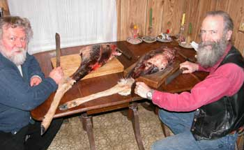
Delay Report #1....
A little delay in the reports, on account as the web slave is off somewhere in Montana, of all places, cutting up deer meat, among other things, but have patience and things will happen again on schedule.
28 December 2006
That is it. There will never again be an Every Thursday Night Barbecue At Dick Flaharty's report in 2006, on account as there are no more Thursday nights in 2006. .
This evening's lecture and formal scheduling included the combined snow-go, dog, ski adventure into the northlands north of Fairbanks, to some remote cabin known only to foolish people who go there for outrageous partying.
The local Fairbanks ambient temperature changed from 28 degrees F below zero last night, to 8 degrees above zero F today, which was survivable but altered the spice arrangements for the steaks on the outdoor barbecue. Mere common culinary artists spice food in relation to the food. The true far north grillmeister matches spices with the ambient outdoor temperature, which in Fairbanks changes from summer to winter over 100 degrees Fahrenheit, which certainly alters spice aromatics and other illusions.
The evening's only bottle of 98 Elk Cove Roosevelt Pinot Noir was discussed with no small volume of rhetorical fabrications, in regard to one person's perception that it was a bit ill influenced by the cork or other environmental hazards. There is just no accounting for the taste of the changing but ever-present divergent opinion. Among the guests gracing the evening was a prior Elk Cove winery representative, who declared the wine fit for full enjoyment.
21 December 2006
Good show. Photos yet to arrive. Karl the walking talking Brit walking around the world, still, gave a slide show to talk about his walking. This guy survived walking, swimming and drifting on ice across the Bering Strait, from Alaska to Russia, last winter, by the most remarkable luck. The full report and photos are in the works, with a link to his website if the slave gets the report. Check back if abject boredom overwhelms your wisely more useful schedule. A paucity of wine arrived, but variety in all things, including volume, is good. Hey, photo person, email the photos to the poor web slave, if you would be so kind to him. If the rest of you get tired of waiting for the photos, show up at one of the functions, take photos, email them to the web slave, and he will just apply them to this report. No one will notice the difference.
14 December 2006
The report arrived late, not unlike those who arrived after two genuinely fine bottles of wine. Fine bottles. Adequate wine. No photos. Simply review the previous photos. Meteorological analyses of the skiing, ski joring, dog sledding and snow machining snow conditions and prospects, noticeably scant, commanded certain discussions among the eclectic sorts attending the culinary adventure. Well, in Hawaii they discuss the surf. In Alaska winter they discuss snow, and Hawaiian surf.
There in the middle of it all only a few noticed and inhaled the small plate of gourmet sweet spiced roasted garlic cloves covered with fresh celanthro, that casually walked in. Was it mentioned that this debatably refined lot of Alaska adventurers include those of culinary expertise that is occasionally unleashed by rare meteorological phenomena. One cannot be sure when more than one truly gourmet creation walks through the door, but one is wise to be attentive to the potential. You know, just casually glance away from the conversation when some one walks in, not to see who it is, but what they are carrying.
Keep in mind that the gentlewomen and gentlemen of the Every Thursday Night Barbecue At Dick Flaharty's are the active group of the experiment, the ones who do not get the placebo. What you eat is the actual recipe that is being tested. Start with a small portion, but be ready to gobble it all quickly if it is as good as no few of the gastronome offerings are at this function. If it is really good, you can snarl, scoop more onto your dish, and just blame it on dog training.
So to establish or retain your high social status amid such fierce competition, wise to show up with a culinary whooptidoo on occasion, even if you have to learn how to read, to read a cook book, in addition to those fine bottles of vintage wines you select at least a couple times a year. You cannot get away with just wearing a top hat. Somebody is already using that cheap trick.
Other fascinating things were discussed, a few of them related to actual scientific knowledge of the world, and others not sufficiently understandable to ascribe to words.
7 December 2006
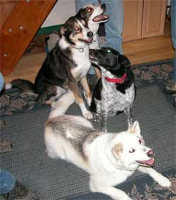
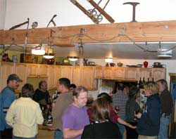
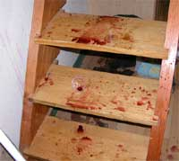
Perhaps you are not aware of the process to discover who parties the most in each community in Mongolia. This evening's touring lecturer, from a distant land, introduced the guests to one of the GoogleEarth analysis processes. The crowd of over two dozen crowded into the room with the computer on a, s l o w, dial-up connection. After opening GoogleEarth, swoop down on a detail photo, winter area, in Mongolia, and select a community. First you may notice that half or more people living in town, live in yurts. If you thought that only the Mongolia prairie people lived in yurts, while in-town folks lived in regular rectangular homes, your knowledge will be advanced. The distinctive round white yurts show up well even in the white snow. You need only then notice the paths and dirty areas in the snow adjacent to each yurt. The obviously larger trampled areas indicate the party yurts, while the single narrow path to the front door indicates the Mongolian computer geek huddled in his yurt, calculating artillery distances to the US capital building, from known Democrat strongholds.While government folks are using GoogleEarth to more extensively spy on people, because government folks did not learn how to create a life of their own, the non-government people are developing GoogleEarth processes for what government folks will forever remain clueless.
Some better kayaking camp spots in Southeast Alaska were also analyzed. The good sailboat Scotty Ann, moored in Rio de Jenario, was spotted on GoogleEarth, on account as its Second Mate was at the party pointing out the boat.
Did I mention how slow the dial-up connection was. The normal GoogleEarth streaming percentage indicator goes up to 100 percent in a reasonable time. On Dick's connection, the percentage indicator is going
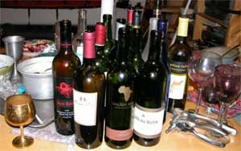
down for the first five minutes. Somebody get this guy a grant for a real connection to the world.A few wine glasses were impact modified, and other wine spilled. Active crowd. The South African wine with the gold image of Africa on the label was interesting. An earthy tobacco flavor. A good recommendation for an occasional different flavor. The Clos du Bois was sequestered for those few who innocently stood in front of that part of the counter, and pretended to be drinking what everyone else was drinking.
The food selection was so extensive that the moose steaks did not even get grilled. The curry broccoli rice and the many ingredient soup were seriously succulent.
The web slave, barely computer literate and PhotoShop challenged, was able to take two photos, and crop out the alternating dorky facial expressions offered for the camera, on the purple and black shirt guys, to make them look normal, for that moment only.
No small volumes of every other concepts were pursued, some of them clearly outside the local galaxy group.
That is the full Thursday Barbecue report for this Thursday Barbecue.
30 November 2006
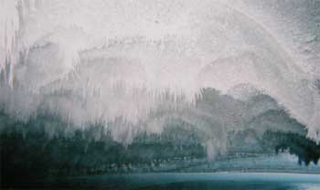
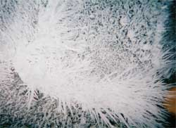
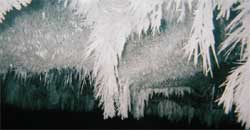
Good grief, mercy. For awhile there were more bottles of wine than people. There was dancing on the counter. The dogs howled, and clouded apparitions appeared on the deck.The scheduled evening seminar on the previous weekend glacier ice caving exploration introduced knowledge of a more rapid than expected compression of the cave ceiling, precluding access to the more distant portion of the cave. Team members were able to squeeze back a ways, scootching sideways on the rocks, with their legs in the cold stream water, but were eventually stopped. The cave entrance ceiling ice crystal growth was maturing to an artistic display that will increase in size and complexity as the emerging stream moisture encounters more cold weather. That art alone is worth visiting the cave anytime in the next three months.
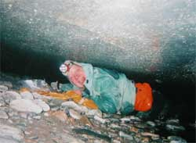
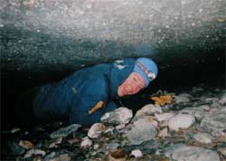
The wine stewards, mindful of last Thursday's viticultural dearth redeemed their good standing with a fine selection including Frey, Chalone, Box Wine in a Bottle and no small volume of other conversational flavors. The grill hosted a modicum of moose, caribou and beef. The array of other culinary contributions was ample as usual.As to the utility of the internet, there was the discussion of a certain local climber currently on a remote ice science expedition to a certain frozen continent, who had described to another certain person back in Fairbanks, the various team members. By chance alone said certain other person stumbled upon a website link to another link to a related website mentioning the very same scientific expedition of no small import, and also mentioned the team members, which were four others instead of three others. Hmmm, curious. During a subsequent phone call, upon a certain comment, said climber at said remote location was noted as saying with a questionably casual presentation: "Oh, I thought I mentioned her." You can go to the ends of the Earth, but the internet is watching you, and all your friends at BarbecueNight are discussing your adventure, all of it. So put on a good show. And send the full report to preclude the rumors, or enhance them.
Gourmet chocolate, Jagermeister. Three dozen people and a gaggle of dogs.
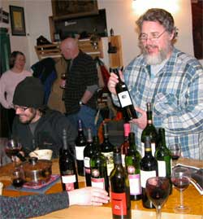
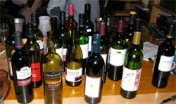
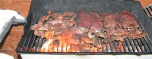
Overheard was a dissertation on no few accounts of climbers secretly putting rocks in the bottoms of the packs of other climbers, some of them present, to slow them down on climbs. I did not know how often that had been done, beyond the times I did it. The variations of the story expounded upon at the time included the times that rocks and certain other scientific samples, some of them liquid, were acquired at high altitude, and sent down the mountain in the packs of porters or assistant climbers who were not fully educated in regard to the scientific importance of the samples. The assistant climbers, not dumb, on treacherous routes, therefore promptly discarded the heavy samples when out of sight, and simply replaced them with lower altitude substitutes just before arriving at base camp. What? You think those NASA moon rocks came from the moon?Hey, there is a Cuban jazz/folk music festival in January at Trinidad Cuba. Major event. Good time. Real people. Internationally popular. You will tell the story the rest of our life. Fun. Ooops. Never mind. The American DemocanRepublicrat Regime must keep Americans away from Cuban music or the Americans will turn into communists. The web slave will therefore not upload all the details of the related process. Check with the underground music network. The password is Trinidad07. Tell them at the door that Rauel sent you.
A couple new visiting dogs had to do the growling thing to establish who growls more impressively, not unlike human political leaders, sorry lot that they are.
There was discussion of the woman walking around the world, who was through Fairbanks not long ago. She is doing that in finer style than the Brit military sort who is doing the same thing in the other direction.
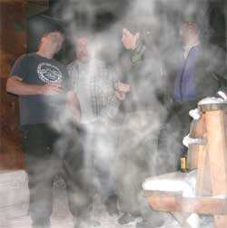
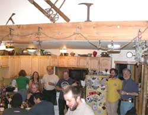
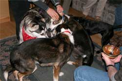
He has been through Fairbanks several time so far. Well, there are different ways to do anything. The local Swiss real photographer and outdoor lecturer, on assignment as usual, gave a full report of his current adventures, including the nature of life on Little Diomede Island. Logan and Chuck were at the Barbecue. Those resulting stories were outrageous.Yeah, that is snow at the end of the barbecue grill, and around it.
A few million dollar ideas were ascribed to notes that will be reviewed by the investment committee.
And there we jolly well have it for the partial report, as usual. Add the rumors of your choice.
22 November Thursday 2006
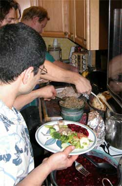
Whadaya mean 22 November was Wednesday. We know how to get an extra day of the Thanksgiving feeding frenzy. We just start early.
The evening's lecture topic was the Post Modern Era (ergo: tomorrow) and its implications for political inactivism. Despite the profound nature of the seminar, and the characteristics of the usual suspects participating, no shots were fired. The 911 folks knew enough to call back in 10 minutes to see if the first call was really worth their time. It was not. The injuries were minor and no wine was spilled. Typical Fairbanks political discussions require mental acclimatization.
As known to you, the Thursday Night Barbecue colleagues and other astute scholars, the current Post Modern era began in the 1950's. America's height of frivolity in the 1920's was extinguished by the federal bankster-induced Great Depression, its intended central bank seizure of vast private holdings, and the subsequent world war, creating a generalized social attitude overtly manifested by serious or determined facial expressions.
Emerging from that particular war, the American society in general began to rediscover the concept of individual enjoyment of life, wherein people smiled, laughed and ridiculed the serious government sorts who retained frowns and scowls. The new fun attitude was taken to its height during the 1960's and 70's, and did not thereafter diminish.
Of course the power of the DemocanRepublicrat regime was, and is always, threatened by people who understand and enjoy the concept of individual freedom to have fun rather than dutifully kowtow to the national leaders lying about attending to great and weighty matters of serious consequence. The mental midget RepublicratDemocans therefore immediately rolled out a series of small wars in their effort to slaughter people into submission to malicious attitudes. Korea, Vietnam, Laos, Cambodia, Panama, Drugs, Grenada, Kosovo, Somalia, Iraq and Afghanistan, with North Korea, Iran and Syria pending, were militarily attacked to fool fools into perceiving that there were serious threats of disaster, destruction and terrorism looming with every breaking wave on both coasts and out of the heartland. Obviously the people creating the threats, destruction and terrorism were the US DemocanRepublicrats with their military insatiably craving war practice.
Yet the public's pervasive Post Modern ridicule of the central RepublicratDemocan Regime, laughing at even the flag waving war mongers, was not successfully destroyed, even by the best efforts of the heavily armed Cheney-Bush gang of malicious NeoCons.
The current American Post Modern era of public ridicule and functional disregard for the war mongering central authority, by individuals enjoying life, therefore retains the vitality that previously defeated the Roman emperors, the Aztec emperors and their ilk throughout history, much to the rage of the Rumsfeld gang, and to the amusement of the observers.
That discussion was pursued in depth by one little knot of the Thursday folks over by the Gnome sitting on the wobbly chair. The discourse on the Anchorage ice climbing conditions, by the refrigerator, involved more detail. The gourmet food preparation crowd, with the dogs attentively listening while looking up at the edges of the plates, pontificated on spice relationships.
Discussion of the next ice caving adventure involved the comment: It is easier to buy her a new pair of waders, than finding somebody else who will go.
Fairbanks is saturated with serious adventurers, but to get any two or more of them interested in the same adventure to the same place at the same time, with too many alternatives bidding for their time, involves toilsome effort.
The wine selection was of such nature that the Wine Steward may be replaced. Apparently the participants were saving their better bottles for the real Thursday Night at other places, quite wisely.
16 November 2006
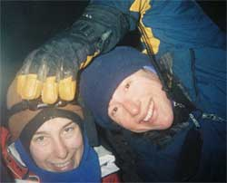
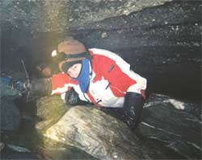
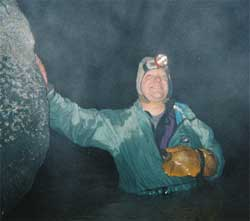
Food: Iowa Bratwurst, grilled portabella mushrooms with provolone cheese, Mexican casserole de el Rojo Hombre, fresh cooked there cranberry sauce, and things with a lot of ingredients.Wine, ah, wine? One of them was so good we hid it back by the stove, as usual, for its short duration of existence.
Discussions: Ice caving, political this and that, wine, more wine, lawyers, mini marshmallow shooter made from pvc pipe (in action), efficient diesel single cylinder generators with large flywheels, government employment, aviation electronics, Brazil, Big Bottle party, serious ballistic projectile designs, super computers made from 27 Play Stations, rock and roll dancing, news commentators, the Turley wine allocation for Fairbanks, overhead fabric shading of irrigated full sun grapes in central Washington to reduce the pre-harvest UV saturation by 20 percent, and more. That is only what the web slave heard.
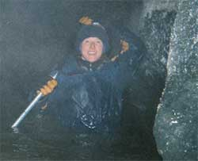
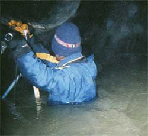
The Formal Report To The Prestigious Thursday Barbecue Conference Attendees, Delegates and Passers-by...The glacier ice cave exploration team, in attendance (applause), was sent down to the Alaska Range on the previous Sunday, again, for more scientific data on the internal water hydrological flow vector forces, or whatever they wanted to do because they are not paid. The entrance to this cave can be seen on AlaskaStories.com Page 10. A gaggle of ice sorts went this time. They got farther into the cave, back to the rapids coming down an ice slot. They took a packed, inflatable raft, but did not use it because they did not have enough rope, ice screws and ice tools to get up through the rapids. They went beyond where no intelligent person would go. Joyce went further than that, and reportedly survived. Nobody goes that deep into precarious swift current undercutting the ice inside a glacier, without wearing crampons, read that again, without wearing crampons, with cheap questionable water gear they can barely afford, with below 0 degrees F cold outside waiting to freeze them upon exit. Nobody normal anyway.
And they were less normal by the time they got back to the car, down the creek a mile or so, leaving a trail of ice shards in the snow.
(Just the usual sort of local Fairbanks stuff, but the web slave was ordered to rhetoricalize it up a bit.)
The conference was honored by the arrival of a couple of the more prestigious Alaska Range explorers of a previous time, escorted by their now-time adventurer daughter.
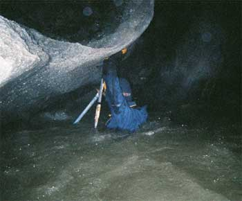
Everyone, including the aforementioned prestigious explorers, and adventure sorts who survived the same type mistakes, or worse, or can figure it out from the pictures, concluded that they would not, as in never, do what that person in the blue hat did, where she was, and without crampons. Yes, everything you see that is not water, person, people stuff or an occasional big rock, is ice.Portions of that glacier river come out from under the glacier at separate sites.
Now that you have seen the pictures, you do not have to do that.
But if you do, send us the pictures, if you survive, or if the camera survived.
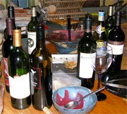
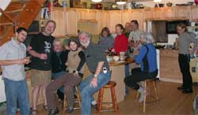
Now, get off the computer and get something worthwhile done, and upload the report.
9 November 2006 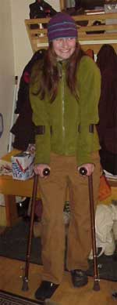
Adventurers show up with crutches, often. You must be there to hear the story.
The evening's adventure was a slide show of Jed Brown and colleague's climb of the north face of Mt. Moffit, Alaska Range, via a new, outrageous rock route, in the middle of the screen photo. A detailed route analysis of this significant climb commanded the discussion among the climbers, while others commented on such unrelated qualities as the spectacular beauty and the questionable descriptions of events, of all things. Anyone in the world would do well to have this slide show and some of those comments presented to their group. Some detailed analyses of other Alaska Range climbing routes where pontificated upon.
Over a dozen people. The wine included a 99 Hawk Crest cab, 02 Trefethen cab, 02 Ferrari Carano cab, 02 Alexander Valley cab, and an array of other vintage selections. The usual moose steaks, Copper River Red Salmon, chicken, salads and some real recipe foods. The Trefethen was obscured upon its arrival. As a result of the web slave revealing the secrets of the more viniculturally astute, certain of the participants who read these reports, are going to pay closer attention to the incoming vintages, to upgrade their share of the finer grape.
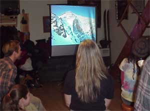
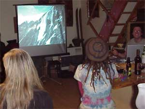
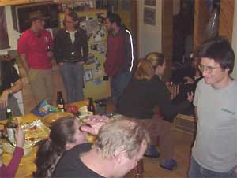
A geological history of the Alaska Range was discussed at a 90 degree intersect with a discussion of the current conditions at one spot therein. The above referenced 5.4 million year old wood is most likely a Sequoia. The suggestion of a piece of such wood that looked like bamboo, was discounted.
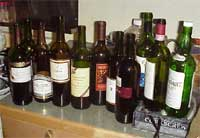
2 November 2006
Dozen or so people. Four dogs, including Suka. A dozen or so wines, including a superlative magnum of 02 Seven Deadly Zins and a Raymond 01 Cab Reserve. Moose steaks, salmon, tacos, a rich soup, intense chocolate cake, and more.
Where else can the grillmeister attend to the barbecue grill with steaks cooking and snow on the hood?
The website was introduced, but no one noticed.
There was an analysis and discussion of the attributes of some 5.4 million year old lignitized wood in regard to an initial item of art made from it. Interesting wood. Potential for a type and style of high end art.
Politics, First Friday art opening, military operations, nuances of male-female communication, ice caving and other conversation wafted through the crowd. The dogs patrolled the food dropping zones. A progressive street party was planned for the road of the Alaskan Alpine Club cabin. The club library and archives were scheduled for reorganization. A reminder of a certain vertical wine tasting was whispered. A Sunday ice cave trip was planned.
Page 2 May 07 -------- August 07
Page 3 August 07 ----- October 07
Page 4 October 07 ---- December 07
Page 5 January 08 ---- February 08
Page 6 February 08 --- March 08
Page 7 March 08 ------ September 08
Page 8 September 08 -- December 08
Page 9 December 08 --- May 10
Page 10 September 10 - Present
Links